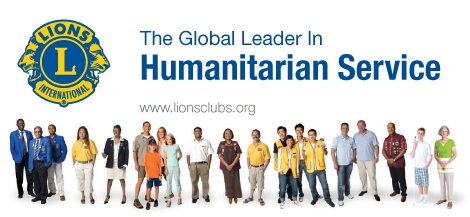

LEO CLUB OF KANCHAN-1242865
Sponsored by Lions club of Kanchan Haraiya-134265
leo District Council-325'B2'Nepal
L.y.2020/21
Kanchan,Rupandehi,Nepal
Home
Download
Activities
Gallery
Member
Registration
Salutation
National Athem
Leo Pledge
Leo Advisior
Board of Director
 Lions meet the needs of local communities and the world every day because they share a core belief - to serve their community.
Lions Clubs International is the world's largest service club organization. We have 1.35 million members in more than 46,000 clubs in more than 206 countries and geographic areas.
Lions have a dynamic history. Founded in 1917, we are best known for fighting blindness, but we also volunteer for many different kinds of community projects - including caring for the environment, feeding the hungry and aiding seniors and the disabled.
Lions give sight. By conducting vision screenings, equipping hospitals and clinics, distributing medicine and raising awareness of eye disease, Lions work toward their mission of providing vision for all. We have extended our commitment to sight conservation through countless local efforts and through our international SightFirst Program, which works to eradicate blindness.
Lions serve youth. Our community projects often support local children and schools through scholarships, recreation and mentoring. Internationally, we offer many programs, including the Peace Poster Contest, Youth Camps and Exchange and Lions Quest.
Our Leo Program provides the youth of the world with an opportunity for personal development through volunteering. There are approximately 150,000 Leos and 6,000 Leo clubs in more than 138 countries worldwide.
Lions award grants. Since 1968, the Lions Clubs International Foundation (LCIF) has awarded more than US$700 million in grants to support Lions humanitarian projects around the world. LCIF was also ranked the number one nongovernmental organization in a 2007 study by The Financial Times.
Lions help during disasters. Together, our Foundation and Lions are helping communities following natural disasters by providing for immediate needs such as food, water, clothing and medical supplies – and aiding in long-term reconstruction.
Lions are active. Our motto is "We Serve." Lions are part of a global service network, doing whatever is necessary to help our local communities.
For more about Lions Clubs, go to
www.lionsclubs.org
What is Leo Club??
Leo Clubs is a youth organization of Lions Clubs International. The word L E O stands for
Leadership, Experience, Opportunity
. Fulfilling our main objective which is to serve to care and care for others. Leo socialize well with people of life and from all around the globe. It’s an essential body as every leo get the chance to develop their leadership skills, gain experience via the various activities held and encourage to strive while the irin is hot. It is the world’s largest youth organization.
We Exist Because……
We’re all members of the Family of Man. Universally, Leos and their sponsoring Lions clubs are linked through their unbreakable bond of determination to improve the human condition. We are willing to serve the less fortunate by giving freely of our time, energy, patience….And love. No matter what you give to the world as a Leo, you’ll get back again in Leadership, Experience and Opportunity.
Leos are youth of ages between 13 to 28 years with high moral standard and dedicated to community service and not member of other service clubs.
13-18(school based)-alpha leo
18-28(open based)-omega leo
Youth is a period of life marked by great changes. It is an age when people leave home, attend school, serve in the military, take employments, seek a mate, and pursue careers. You can therefore expect the Leo Club’s membership to fluctuate from the year to year, and even during the year.
What Is The Benefits To Join Leo?
Who benefits from Leo clubs? Young people . participation in Leo activities and projects helps young people prepare for the future by developing leadership, organizational and social skills. Members experience increase self-esteem and personal growth as they meet challengers and accept responsibilities. By volunteering their time and talents for the benefit of others, Leos learn firsthand the value and rewards of service. Leo club involvement of helping others. The sponsoring Lion club. By sharing in service activities, a Leo can increase a Lions club’s Effectiveness in helping others. Leo projects within the community also contribute to a Lions club’s visibility and good reputation. Working with young people can help Lions club members experience renewed interest and enthusiasm for project and activities. If Leos are sons or daughters of Lions, club involvement becomes a “family affair”. The community. Leo projects contribute to the well-being of the community. Improving the environment, promoting drug awareness, offering health services, visiting the elderly and providing food, clothing and supplies to the quality of life for others. Involvement in improve in the Leo International Environment Project helps to create a more ecologically concerned world.
leave a message
LEO CLUB OF KANCHAN-1242865
Sponsored by Lions club of Kanchan Haraiya-134265
leo District Council-325'B2'Nepal
L.y.2020/21
FOLLOW US
SPONSOR BY
Copyright @ 2021 leo Club of Kanchan